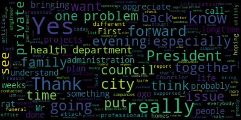
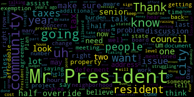
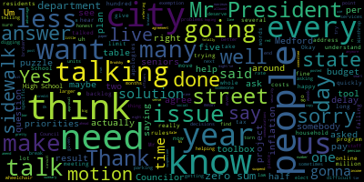

AI-generated transcript of City Council 10-12-21
English | español | português | 中国人 | kreyol ayisyen | tiếng việt | ខ្មែរ | русский | عربي | 한국인
Back to all transcripts
Heatmap of speakers
[Caraviello]: Good evening, everyone. The 32nd regular meeting of the Medford City Council, October 12th, 2021. Mr. Clerk, please call the roll.
[Hurtubise]: Councilor Paris.
[Caraviello]: Present.
[Hurtubise]: Councilor Falco. Present. Vice President Knight. Present. Councilor Marks.
[Caraviello]: Present.
[Hurtubise]: Councilor Morell. Present. Councilor Scarpelli.
[Caraviello]: Present.
[SPEAKER_05]: President Caraviello.
[Caraviello]: Present. Please rise and salute the flag.
[SPEAKER_05]: I pledge allegiance to the flag of the United States of America, to the Republic for which it stands, one nation, under God, indivisible, with liberty and justice for all.
[Caraviello]: The motion by Vice President Knight to suspend the rule, seconded by Councilor Bears. Mr. Clerk, please call the roll.
[Hurtubise]: Councilor Bears? Yes. Councilor Falco? Yes. Vice President Knight? Yes. Councilor Marks? Yes. Councilor Morell? Yes. Councilor Scarpelli?
[Scarpelli]: Yes.
[Caraviello]: President carry all yes, 7 affirmative motion passes. I was a night.
[Knight]: To our existing billboard before us this evening it was tabled for a couple weeks and I'm hoping we can pick that matter up.
[Caraviello]: It's a paper to one. 2, 1, 5, 6, 8, petition to reverse I don't know about you know I'm out of a clear channel to to do 6 missus Avenue that the best we've heard that I don't need a city rule. I think I see you know I'm out of here you know.
[SPEAKER_12]: I was the president carry all members of the council on if I may can I share my screen.
[Caraviello]: If you, if you can hang on a second, I'll let you, I'll let you in. Hold on a second. He'll let you do that. You should be all set. Okay. So you should be all set.
[Unidentified]: Perfect.
[SPEAKER_12]: Can you guys see?
[Caraviello]: Yes, we can.
[SPEAKER_12]: Okay. All right. Good evening. My name is John Omar with clear channel outdoor and we have a project going on at 2.36 to 2.40 mystic Avenue. Mister Ron Roberto which I think he is present in the crowd tonight. We have been a tenant here for Mister Roberto for just over 16 years. And he had approached us recently. Over the past couple years is having an issue. with his parking lot with the weather coming in the snow. He's not getting proper drainage for his tenant. So he had come to us to see if there's anything we could do with the sign to move in to help him out as the drainage isn't really isn't really working out for him and you'd like to see if he could you know if he can fix his own and we could possibly move the sign. So he had asked us to move the sign 15 feet to the south of the property. Hopefully that will allow him to fix his parking lot to alleviate you know the drainage issues improve snow removal and improve parking for his her rental car tenant. We would like to proceed to see if we can move this sign and convert upgrade the site to digital which we do have 2 of the signs within the city north and south of the billboard. As prior agreements we have we give the city 7 hours of public service messaging per month on each face. 15 hours of public service and mask on which they receive. The city would get 25,000 per year linkage fee for the life of the lease. So however long the lease is there, the city will get $25,000 per year. The sign does go dark from 11 p.m. to 5 a.m., so as people are aware, the signs do just completely shut off, turn back on at 5 a.m. And then if we are approved by council tonight, we'll enter into another development agreement with the city of Medford with the above terms. And in the past, You know these billboards they can be used for public service announcements whether amber alerts FBI bulletins emergency response programs. In the city does take advantage. The public service advertising in the past is what's been advertised on these billboards for the city. So we have basically seeking permission to move the sign 15 feet salt and convert this to a digital. Upgraded to digital.
[Knight]: It was a night. I'm very familiar with this parcel of land. I'm very familiar with the billboard agreement that the city has with clear channel. It's not something that's negotiated by the city council the terms of the agreement of the terms of the agreement. I think really the issue that's before us this evening is whether or not we're going to reverse the sign denial because of the denial that was issued by the building commissioner because it falls out of the scope of our sign ordinance. This billboard has always fallen outside the scope of our signed ordinance because it was part of a program that was negotiated with the state. In order to allow the property owner to get the necessary relief that he needs to make his parcel more accessible and more developable, I think it makes sense for us to approve this measure this evening, Mr. President. The way that I look at this is we're addressing an environmental concern relative to the runoff and leakage and drainage problems that we have at the gentleman's parcel, and we're also getting upgrades to the existing billboard to make it more environmentally friendly. The transfer, it's going to help us out with light pollution and the like. So I think that this is a measure, Mr. President, that's a win-win for all. It allows the property owner to get the necessary relief that he needs. It allows Clear Channel the opportunity to upgrade their existing equipment, and it allows us here in the city of Medford to have some of the best, state-of-the-art, most up-to-date equipment to utilize through public service programs that they have. So I, for one, certainly feel as though this is a measure that the council should be approving, and I will move for approval.
[Caraviello]: Thank you.
[Morell]: Thank you. Mister president, I just have a few questions. So the plan is that the sign would move 15 feet and then the property owner would do whatever additional work they need to do to improve drainage. You guys are simply just moving the sign. You're not doing anything else.
[SPEAKER_12]: No, we're just moving the sign and the property owner can handle the drainage himself and do what he has to do to the city and get the necessary permits to do so.
[Morell]: Okay, thank you. And vice president, I just alluded that, um, the illumination would be different. It would actually be lower and less disruptive with the led, the digital billboard, as opposed to the current illuminated one. Can you, is that correct?
[SPEAKER_12]: Uh, that is correct. So the electronic billboards are monitored by the state. Um, I believe that measured in NITS. So the state does monitor the brightness of, um, the billboards and with new technology today, um, if the signs are too bright, They have a sensor in it that automatically brings them back down to the proper brightness.
[Morell]: Do you know how close this is to the other digital billboard? I don't know.
[SPEAKER_12]: The other digital billboard, it should be well over 1,100 feet. OK. So relatively close.
[Morell]: Okay, that's all I have right now.
[Marks]: Thank you. Thank you, Mr. President. And, um, just for a little bit of, uh, background on this, I actually sat on the council when there was a pushback some 16, 17 years ago, uh, to consolidate the number of billboards that existed throughout the community. and many of which abutted neighborhoods, uh, as we all are aware. And the push back then was to kind of centrally focus, uh, the billboards along 93 and take them out of the neighborhood areas. And I believe the agreement that was passed some years ago was very successful in taking out some of that blight in our neighborhoods. And at the time, residents were very happy with the agreement that was struck by then Mayor McGlynn and some of the big billboard advertising companies at the time. Ron Roberto has been in this community for a hundred years. I know you're not that old, Ron, but he's been an establishment in this community for 100 years, Mr. President. He's been a tremendous business owner. He's been a tremendous advocate for social service programs in our community and someone that I look up to, Mr. President, as a business leader in our community. So I just want that to be known, Mr. President. The question I had to Mr. Yano, he mentioned the $25,000 in linkage and seven hours of public service messages. I was just wondering, does that differ from the current agreement that is in place now?
[SPEAKER_12]: Yes, we went into another separate agreement, another agreement with the town.
[Marks]: Okay. So, so, uh, can you state what the original agreement is and when does that, was that a 20 year agreement? And when does that end?
[SPEAKER_12]: Uh, so basically it's, it's the life of the lease. So currently we'll have, we have a 25 year extension on the Bilbo lease with Mr. Roberto. So for at least another 25 years, it's 25 K each year. So the current lease was for how long with Mr. Roberto? Yes. I think that expires in five years.
[Marks]: So that expires in five years. So when you talk about the $25,000 linkage, is it just for this sign or is it for other signs included?
[SPEAKER_12]: It's just for this sign. The other signs are already included in a development agreement with the city.
[Marks]: Right. So the seven hours of public service is in addition to hours that are being done right now.
[SPEAKER_12]: Correct. In addition, in another 25 K on top of the other agreement.
[Marks]: Right. Are you able to tell us how many public service hours have been messaged on that board since its inception?
[SPEAKER_12]: I don't have that off the top of my head, but, um, you know, in prior slides that I did show, let me see if I can show these again. Um, I mean, it does look like the city does take advantage of it. Um, here's at least six, I'd say probably within the last, you know 6 months. And then here's another another 6 that were used. So the city does. You know take advantage of the usage.
[Marks]: Mr. Clerk, Mr. President, as part of this report, I would ask that we receive an update on the public service messages that are going out by the city. I want to make sure if they're allotting, it's a very expensive endeavor if anyone ever put something up on a billboard, and I want to make sure that we're using it to benefit our local civic groups as well as our sports teams and any other messaging, Mr. President. So I want to make sure that we're taking full advantage of that. I have, as my colleague stated, I have no problem upgrading to a digital board. You know, that's the wave of technology, and it's the latest and greatest. The illuminants are less than what's out there now, so that's always been a concern with the Butters and neighborhood, and the fact that it's gonna be shut off after, did you say 11, Mr. Yano? Yeah, they go dark from 11 to 5 a.m. 11 to 5 a.m. The city does not pay for a nickel of the electricity that's paid by the property owner, and we get $25,000 in linkage. So to me, this is a win-win, Mr. President, and I will support it tonight. Thank you. Thank you.
[Falco]: Thank you, Mr. President. I want to thank Yano for the presentation. Yano, could you show us slide number four again?
[SPEAKER_12]: Sure. Yeah. Can you see it?
[Falco]: No. I think it was the slide with all the community benefits. I just want to look at that one more time. I missed the last one, I think.
[Morell]: I think you need to reshare your screen, because we're not seeing anything.
[SPEAKER_12]: OK, one second. All right. Can you see that? Yes.
[Falco]: Uh, point that was the, uh, bullet number. I went to five. Let's get cut off at the end and sure. Make sure I can see the whole thing. If you want to read it, that's fine.
[SPEAKER_12]: Bulletproof bullet point five. If approved by city council, CCO will enter into another development agreement with the city of Medford with the above terms.
[Falco]: Okay. All right. That's all I wanted to see. Perfect. Uh, thank you so much. Appreciate it.
[Caraviello]: Any further questions? Okay, so on the motion by Vice President Knight, seconded by Councilor Bears. Mr. Clerk, please call the roll.
[Hurtubise]: Yes. Yes. Yes. Yes. Yes.
[Caraviello]: Yes, semi-affirmative. Motion passes. Thank you, Mr. Romero. Thank you for coming down, Mr. Romero. Thank you so much. Have a good night. On the motion to revert back to regular business by Council Marks? Second. Seconded by Councilor Falco. Mr. Clerk, please call the roll.
[Hurtubise]: Yes. Yes.
[Caraviello]: Yes.
[Hurtubise]: Yes.
[Caraviello]: Yes 7 affirmative negative motion passes. Earrings. 2, 0, 5, 6, 8, The city Council should conduct a public hearing. How it up all the chambers of the city all if I just be has to drive if it and by zoom on Tuesday, October 21st only to be posted no later than Thursday, October 7 2021 to take the following actions. in regards, and with regard to the zoning ordinance. All right, so, we have delete existing ordinance. The intent is to delete the entire existing ordinance. Article one, in general, and this will be replaced with a proposed ordinance, section 10. Section 1-0, purpose and authority. Article two, administration and enforcements. To be placed with 2.0 district reserved out of article three reserved section 3.0 use regulations. I'll go for use regulations to be placed by section 4.0 dimensional rate regulations, article five science section five nonconforming uses instructions. I'll go 6 site plan review. We've been placed with section 6.0 general regulations. I'll go seven development linkage fees to be replaced with section 7.0 special regulations. I'll go eight vacant and foreclosing properties to replace with special section 8.0 special residential regulations. I'll go nine inclusionary housing. which will be replaced with Section 9.0 Special District Regulations. Zoning Map. Section 10, Development Leakage Fees. Section 11, Administration and Enforcement. Section 12, Definition. Zoning Map dated. Okay, so, The full proposed zoning recodification is available for view in the city clerk's office and online at DriveGoogle.com dash folders. 1-E-T-N-F-O-L-L-A-L-I-W-I. Or call 781-393-2425 for any accommodations. Do we have any questions on the hearing yet. What is the hearing? We have anybody in favor of this? Mr. President, motion to continue the public hearing and refer the paper to the Community Development Board. The motion by Vice President Knight to refer the paper to continue the hearing to the Community Development Board. Mr. President. Councilor Marks.
[Marks]: Thank you, Mr. President. I want to thank my colleagues. This has been a long arduous process over the last year and a half. Countless meetings, hundreds of hours, Mr. President, meetings, the hiring of a consultant. And I believe what we have now is a good working document. One in which requires additional stakeholder input. Um, and that is going to take place over a period of time with the offices of the community development board, as well as what this method city council. So there's much room for discussion and change. This was a starter document that we put together. Uh, it hasn't been looked at in probably 30 something years, the zoning in our community. So, It was long overdue. The one request I would have, Mr. President, and I've had a number of residents reach out to me asking me to summarize the major changes, um, in this particular document. And I know we have a red line, the blue line copy. And, uh, unless you've been working with this document, uh, for the past year and a half, um, to me, it's zoning is pretty complex. I think it's one of the most complex issues that I've had to deal with at my tenure on the council. And at this point, I would ask that if we go back to our consultant and see if he can put together a brief summary of the major changes. There was a lot of technical changes, and I don't think at this point the technical changes we have to summarize, but the major changes uh, that, uh, you know, and I, and I guess that's open for interpretation, but the major changes to this, Mr. President, if he could put together just a brief summary, so residents can look at it rather than going through a hundred page document, uh, look at it and say, okay, this is impacted. That's impacted. I agree. I don't agree. I should research this further. I don't need to research it further. Um, and at least, uh, give them a starting point. Uh, you know, we've all sat through hundreds of hours meetings, uh, and most residents haven't had that opportunity. Uh, no, what I say, they should, uh, you know, uh, have been that involved. That's why they elect us. But, uh, it's important that, uh, they have a thumbnail cursory of what transpired through this work of this council over the last year and a half. So I would respectfully ask that be part of Council Vice President Knight's paper to move this forward to the community development. Thank you, Mr. President. Thank you, Mr. President.
[Bears]: If I could further amend that. Oh, sorry. You can go ahead. I'm sorry. I'll just go really quickly. If we could post the red line copy online, as well as the summary when we get it. And I, I'm totally in agreement with you. I think we might've asked Mr. Brodsky to do that at the committee of the whole meeting. So it should be, maybe it's to be done more quickly. So I'm hoping that both of those can be posted online. That's it. Thank you. Thank you.
[Morell]: Thank you, Mr. President. I want to thank Councilor Marks for his words and just echo what he said in that this moving to the Community Development Board is just another step in the feedback process. There's a lot of time for more stakeholder input, citizen resident input. This isn't us rubber stamping it. This is us just moving into the next process of engagement. And I just want to make that clear. Yes. Thank you.
[Falco]: Thank you, Mr. President. I just want to thank all my colleagues for all their help with this. This actually has been a long process. Like Councilor Marksley mentioned, at least a year and a half that we've gone through this year. A lot of meetings, great team effort. We're not done, but this is a major major piece of the process, passing it on to the CD board. And I believe Mark Obrosky is working on that document, which is definitely something that will benefit everyone that wants to look at the changes that we made. But this has been a great team effort, and I look to definitely work towards a finished product. We're going to be better for it in the end, and well worth the time and effort that we've put into it. So thank you.
[Caraviello]: Thank you. And again, uh, this was a, this was a long process. Um, and again, I, I, I'm, uh, very happy that we, uh, I had, uh, Mr. Burkowski, he's probably the foremost authority on zoning in the, in the Commonwealth of Massachusetts. And, uh, he will be presenting this, uh, to the OCD board. And I'd like to, um, hopefully with, uh, after this is done, I'd like to have him come back and actually help with the actual zoning of the city. I mean, his expertise is really second to none. So I say, after this is done, we can have a discussion on this, but I'd like to have him come back and help out further. On the motion by Vice President Knight, seconded by Councilor Falco, as amended by Councilor Bears, and amended by Councilor Marks. Did I miss anybody? Mr. Clerk, please call the roll.
[Hurtubise]: Yes. Yes. Yes.
[Caraviello]: Yes. Yes, some affirmative motion passes. Well, motions, orders and resolutions 21527 offered by Councilor Scott Peli be a result of the City Council get a report from the city engineer in the administration of street openings in the final paving of those projects with dates of paving completion over the last over the past five years. Councilor Scott Peli.
[Scarpelli]: Thank you, Mr. President. First of all, I know that mom had her her funeral today and I just want to thank everybody that's on the council that supported my family and and and understand the reason why I'm not there this evening but I just I want to just make sure that as we're This is something I presented a few weeks back that was being held off, and I appreciate to bring this forward this evening, but if we could just get a report from the city administration, the engineer's office, that we can look back at some of the projects that we've done that have been performed by, especially our utility companies, and if the projects were successful, brought back to what we request every time that the openings are at the same or better condition. So if we can get just a simple list and what has been done so I can check. It's not just one. The problem is there's probably about 15 to 16 that people have contacted me on. So if we can get that, that'd be greatly appreciated.
[Caraviello]: Thank you. On the motion by Councilor Scarpelli, seconded by Councilor Falco. Further discussion? Mr. Clerk, please call the roll.
[Hurtubise]: Councilor Beres? Yes. Councilor Falco? Yes. Vice President Nights?
[Scarpelli]: Yes.
[Hurtubise]: Councilor Marks?
[Scarpelli]: Yes.
[Hurtubise]: Councilor Morell? Yes. Councilor Scarpelli?
[Caraviello]: Yes.
[Hurtubise]: President Caraviello?
[Caraviello]: Yes. Seven in the affirmative, motion passes. 2-1-5-2-8, offered by Councilor Scarpelli, be it resolved that the that the City Council express its sincere condolences to the family of Richard Thoreau, a longtime Methodist resident. Councilor Scarpelli.
[Scarpelli]: Thank you, Council President. Mr. Thorde was a longtime Methodist resident who lost his life in battles with cancer, and a very important person in my life was one of the first people to volunteer and call and help my run in the school committee years ago. And I graduated with a son, Scott, and a longtime Medford family, and I just wanna send sincere condolences and well wishes to the family. Thank you.
[Caraviello]: Thank you. Second. The motion by Councilor Scarpelli, seconded by Councilor Marks. Mr. Clerk, please call the roll.
[Hurtubise]: Councilor Bears? Yes. Councilor Falco? Yes. Vice President Knight? Yes. Councilor Marks? Yes. Councilor Morell?
[Morell]: Yes.
[Hurtubise]: Councilor Stark-Kelley?
[Caraviello]: Yes. Hereby I'll- Yes, seven in the affirmative, motion passes. 21575 offered by Vice President Knight, be it resolved that the administration notify residents via reverse 911 call, inform them of these 5G facilities that have been approved. Zero Gourley Road, Zero West Street, 24 Pearl Street, 26 Royal Street, 48 Clark Street, 40 Ashland Street, 12 Fulton Street, 23 Woodrow Ave, 123 Grant Ave, 0 Logan Ave, 0 Brookside Parkway, 83 Washington Street, 39 Charnwood Road, and 163 Forest Street. Vice President Knight.
[Knight]: Mr. President, thank you very much. As we're all aware, if we've been paying attention to what's going on in this community, as of recent, the issue of 5G technology was certainly a concern.
[Caraviello]: Skip one. Skip one.
[Knight]: Which was 0 Goley Road. No, no. Oh, he skipped. Oh, he skipped. I'm sorry. We can jump back to it. Mr. President, why don't we get council Scarpelli's items out of the way.
[Caraviello]: Is that a long time?
[Knight]: Ultimately, Mr. President, the issue of 5g facilities in this community has been a topic of discussion and concern. There are many individuals in this community. that have expressed some concern about 5G technology and the placement thereof. Recently, the city's ad hoc small cell committee has approved 17 5G towers to be located in the city of Medford. And I just want to be sure that the residents that are going to be abutting these 5G towers are notified of the circumstance that the approval has been awarded and whether or not there are any appeals processes for these abutters should they wish to pursue them. So that's the resolution in a nutshell, Mr. President.
[Caraviello]: On the motion by Vice President Knight, seconded by? Second. Seconded by Councilor Marks. Mr. Clerk, please call the roll.
[Hurtubise]: Councilor Paris? Yes. Councilor Falco? Yes. Vice President Knight? Yes. Councilor Marks? Yes. Councilor Morell? Yes. Councilor Scarpelli?
[Caraviello]: Yes. Yes, 7 in favor of the motion passes. 2-1-529 offered by Councilor Scarpelli be it resolved that the city administration organize a professional working group dealing with severe rat concerns in our community. Councilor Scarpelli.
[Scarpelli]: Thank you. Mister president again this is something that before weeks ago so I appreciate bringing forward again this evening but I was probably one of them. Most phone calls I've been receiving this from my constituents about the rat problems we're having and I can understand the plan with the city moving forward with the health department, but I think we really need to move forward more aggressive, more detailed plan, and bringing in some professionals that really see this rodent infestation or rat infestation as being what they do best. I think that especially what's going on with the pandemic and what other issues our health department has, I don't think we're really putting enough time to really attack this problem before it even gets worse. So I know just recently Channel 4 and 5 had Melrose's issues and we had so many different other neighboring communities that are going through the same situation, but I just don't want to you know, get so far behind with this, this concern that we're going to be, we're going to be really in trouble. So what I've asked is the city administration, the health department, um, is really work together and try to put together and invite, um, you know, uh, professionals, both the, the academia level and maybe contacting our neighbors and see what we can do as a collaboration, especially when we abut some of these cities that are having such a horrific time with this. So it is an issue. I mean, I went to five different homes prior to my little hiatus and The barrels have been eaten through, you see nests. I know that council's put forth some changes hoping to allow private entities to, public entities to enter private private homes, so we're hoping we can do more. So again, really reach out to the city administrator and put together a working group that will attack this and its necessity as it's been called on. So thank you.
[Caraviello]: Thank you, Councilor Caput. Councilor Falco.
[Falco]: Thank you, Mr. President. I want to thank Councilor Scarpelli for bringing this forward. I've received numerous calls from various neighborhoods throughout the city, and it's consistent. I mean, I've received calls from Wellington, North Medford, South Medford. One person even called me and literally FaceTimed the rats that were in his backyard. And it's a real problem. It needs to be addressed. I know that it's been going on for a while, but I would ask, Mr. President, if you could please schedule a committee to hold a meeting with the health department. I want to see exactly what they're doing to address this situation. Are they baiting the sewers? Are they not baiting the sewers? If they are, what sewers are they baiting? What neighborhoods are they baiting? This is a concern that is throughout the city. Like I said, it doesn't matter. Various neighborhoods and it needs to be addressed. So I would ask you to, if you would please schedule a committee to the whole meeting with uh, uh, health department to, um, get some answers with regards to some of those questions. Yes, please. If I could amend that councilor Scarpelli's resolution as amended by council. Thank you.
[Morell]: Thank you, Mr. President. I think councilor Scarpelli for bringing this forward. And I think we saw the same news story. So I was going to suggest the amendment that the administration either, um, work with, surrounding cities or encourage representation from surrounding cities because this again, this is a regional problem. This isn't just a Medford problem. This is every city around us is facing the same issue and the rats don't know where the city border ends. So I think just working collaboratively with those other cities that are affected, which as far as I can tell is everyone. So just amending to add that they invite representatives from surrounding communities to this working group if they can attend.
[Caraviello]: Are you adding it as an amendment also? Thank you, Councilor. Councilor Marks.
[Marks]: Thank you, Mr. President. I want to thank Councilor Scarpelli for putting this on. I can date this back to probably at least five or six years ago in the Dexter Street area. We were getting a number of complaints back then for rats. The problem has shifted up to the heights around Carr Park. to Wellington and the Haines Square area. I'm getting a ton of complaints, Mr. President. Just tonight, coming to the meeting, you know how it gets dark early, I put my car lights on in the driveway, and a good-sized rat walked by the garage door. um, and Wellington that was in my own driveway. Um, you know, this is becoming a public health crisis. And in my discussions with the city recently, as of within the last week, because I've been asking about the baiting as councilor Falco mentioned, I was told by a city employee, they no longer bait the catch basins in the community. They do not use that as a process for controlling pest control in this community. I'm not sure what the process is. I can tell you firsthand, when you call and say there's a problem with rats, the city comes out and they give you a leaflet. And they leaflet all the doors in the neighborhood. And they'll tell you, don't leave food out. Don't put your barrels out too early. Don't leave a water source. If you're giving the birds water or squirrels, don't leave that out because rats are going to look for the water source. You know, if you're growing vegetables outside, make sure you have them contained and not a food source. There's a lot of, you know, things residents can do, Mr. President, but I don't believe the city has acted enough on behalf of its residents. And I've stated this in the past, and I need to be critical, Mr. President, because yes, this is a problem. I read an article recently in the Town Online that said how it's a not sure problem. But yes, it's a problem in other communities, but we're not doing enough. And I brought this up during budget. I believe, and I don't have the number in front of me, it was in between $10,000 to $15,000 that we spend citywide for pest control. Anyone that's called someone to do pest control, they'll come out your house, it's $300, $400 a whack to do an extermination around one home. Here we have seven square miles with 15,000 homes, and we're spending $10,000 to $15,000 on pest control, and we have a rat problem. It just doesn't make sense, Mr. President. And I don't believe the city's taking it seriously. And I agree with Councilor Falco and Councilor Scarpelli. We need to call for a meeting, Mr. President, pretty quickly to find out what the Board of Health's doing regarding this. We're bringing in as contractors, because clearly we don't have the bandwidth or the capacity to handle it internally. And secondly, Mr. President, as I stated before, and I'm not sure if the city's working on it or not, this council voted unanimously, uh, as part of, uh, the, uh, ordinance that we put together was to, uh, allow for a document that residents can sign that would release the city of Medford from any liability. If the city of Medford saw that they had, uh, you know, rat colonies on their property, and the resident was unable to afford it, or it was a non-owner occupied residency, that they could sign a form and have the city come in, because this is a public health crisis, no different than COVID. If there's a large nest of one property, that affects everyone on the street. And I believe it's the responsibility of the community as well as the city to step in, Mr. President, where need be. And we're at that point right now. So I would ask if the as an amendment to if the city administration has created that waiver form, I believe last I heard from the Board of Health, they were working on it. But if they create a waiver form that would allow residents to free the city from liability and assist residents in the containment and the control of pests in this community, i.e. rats, Mr. President. Thank you. Thank you.
[Caraviello]: Uh, and like I said, I, I've been getting calls from people at the hillside, uh, up there and, uh, and you know, within a lot, a lot of it's coming from, uh, as Councilor Marks mentioned, people feeding the birds. Uh, the bird feeders are, uh, seem to be a big, a big problem, big part of it also. Uh, so, uh, the motion by Councilor Scarpelli is amended by Councilor Falco, is amended by Councilor Morell and Councilor Marks has also amended it. seconded by second, seconded by vice president. Mr. Clerk, please call the roll.
[Hurtubise]: Yes. Yes. Yes. Yes. Yes. Yes. Yes.
[Caraviello]: Motion passes.
[Bears]: Mr. President, motion to suspend the rules to take paper 21-5-5-1.
[Caraviello]: On the motion by Councilor Bears, suspend the rules to take paper, which one?
[Bears]: It's the communications from city officers.
[Caraviello]: Okay, 2-1-5-5-1, seconded by Vice President Knife. Mr. Clerk, please call the roll.
[Hurtubise]: Yes. Yes.
[Unidentified]: Yes.
[Hurtubise]: Yes. Yes. Yes.
[Caraviello]: Communications with city offices employees 21551 to President Caraviello and members of the Medford City Council. We respectfully request that you're all on board to approve one of the three re-presenting maps presented during the last two Committee of the Whole meetings of September 28th, 2021 and October 5th, 2021 after you consider the October 5th Committee of the Whole report. full plans for redistricting are available for view in the city clerk's office and online at drivegoogle.com, backslash file D20. I think if you call the clerk, it'd be a lot easier than we're trying to read these off. So, um, um, I think we have to do the committee report first, correct?
[Bears]: That's fine with me. While we're under suspension.
[Caraviello]: Before we do that, we have to re-report this out to the committee. So, we can have a motion to take the reports of committees first. So moved. On the motion by Councilor Bears, seconded by Councilor Falco to accept the report of the committee meeting 21551 on October 5th, 2021. seconded by Councilor Knight. Mr. Clerk, please call the roll.
[Hurtubise]: Yes. Yes. Yes. Yes.
[Caraviello]: Yes. Yes. Six in the affirmative, one absent. Motion passes to report the paper favorably. Okay. So
[Gale]: Good evening, guys. Name and address of the record, please. Good evening. Sandra Gale, Acting Election Coordinator, 85 George P. Houset Drive.
[Caraviello]: Give a brief presentation on what you'd like to do today.
[Gale]: Sure, so as all the councilors know, over the last two weeks, we've presented initially two maps, and then we added an additional one last week. So we have plan A, plan B, and plan C. I think we covered all of the sort of glitches that we may find with any of the three maps. However, the one thing that was left out, and it was brought to my attention by the clerk last week was that there is going to be an impact based on whatever map you choose to the voter. So if you choose plan A, the voter impact of moving to a different precinct is low. Plan B is a little higher. Plan C is gonna cover probably at least 50% of the city, I believe, Mr. Clark, is what we said.
[Hurtubise]: It's going to be, it would be at least a third of the city.
[Gale]: At least a third.
[Hurtubise]: We would be taking 16 precincts and going to 24 precincts. So it would be at least a third, it could be higher than that.
[Knight]: So, as you mentioned, that is what information vice president night, I do believe that would give us the capacity, though, to see growth of city population upwards of 38,000 people over the next 10 years without having to worry about having to do this again. So it seems like an option. See, you know, in fact, the voter had to be moved this time. Once it's done, it's done because we've been able to address the future population growth to such an extent capacity. I don't see it having to change again.
[Hurtubise]: Vice President, that is indeed one of the benefits of Plan C, but I believe Ms. Gale was talking about one of the potential adverse impacts. But you are correct, that is one of the benefits.
[Gale]: Plan B is also probably the most immediate solution. I know that there would be impact in the Wellington area. But when you look at where the exponential growth for the city of Medford has come from, in the last seven to nine years, it has been the Wellington area. And the Wellington area is one of the areas where we were very top heavy in regards to not meeting that 4,000 residents, and that's what we have to remember. There are different terms and things that we use, but it's 4,000 residents per precinct, plus or minus 5%. So in order to eliminate that and allow us for the growth for the pending 40Bs, as I stated early on in the packet, Plan B would be the way that would address that. I also understand the council's position where you want to have the least amount of change, and that could leave you back at Plan A. Plan A still would impact the city with some change as far as boundaries are concerned, but not as much change if you went with Plan A. So if anyone has any questions,
[Marks]: Questions from Ms. Gale? Mr. President? Council Box? Thanks again, Senator. I appreciate all your time and effort on this. So, with Plan A, will we be able to address some of the concerns that were raised by this council regarding someone that may live up the heights and have to go down to the Roberts School to vote and not the Firefighters Club? Will we be able to address some of those issues within Plan A?
[Gale]: No.
[Marks]: We won't?
[Gale]: No. So the only thing that plan A does for you is it shifts the boundary lines, a couple of streets, or maybe a block.
[Bears]: Ms. Gale? Yes. I think actually plan A is nine words and plan B is eight words. So I think we've just been, we've been referring to them.
[Gale]: Incorrectly?
[Bears]: Yes.
[Gale]: Well, I have plan A. Am I wrong?
[Bears]: Okay. Sorry. My apologies.
[Gale]: So plan A, the one, is that the one, Councilor Martins, are you asking?
[Marks]: Plan A is really no change at all, right?
[Gale]: No, it changes a couple of streets, plus or minus, but it's not a huge change.
[Marks]: Right, right, correct. I just want to make sure we're all on the same page, that's the way I understand it.
[Bears]: Sorry about that, my apologies.
[Marks]: So plan A wouldn't address some of the concerns that this council has had. I know Councilor Falco mentioned it and I mentioned it at the last meeting, with addressing some of the concerns of residents saying, why can't I vote at this precinct across the street from my house and I have to drive three miles? So, we can't address it with that. Potentially, we could address that with a plan B that creates the additional ward in the Wellington area and shift areas based on that?
[Gale]: Yes. It addresses some, but it doesn't address all.
[Unidentified]: Okay.
[Gale]: And it also addresses the abutment of numbers so that we get correct with, if 11 starts here at say three o'clock, we're gonna move the hands of the clock and go this way and say one, two, three, four, five, six, seven, eight, nine, so that we are counterclockwise correct with what our ward numbers are. So that addresses that as well. Okay, thank you. You're welcome. Mr. Clerk, I'd like to speak.
[Hurtubise]: Just to follow up on your point, Council Marks, the council can move a polling place. outside the census process and has done that. The council moved the poll in place for 3-1 out of Lawrence Memorial, the former Lawrence Memorial Hospital into the American Legion. Moved 8-2 out of the VFW and into the South Medford Fire Station. Moved 2-1 out of St. Francis and into the Roberts School. So the council, I mean, Sandy and I would have to look at the realignment of polling places, but we could move some polling places. I wouldn't want to do it wholesale. I would want to look at them case by case, but that's one of the things we can look at regardless of the outcome of your votes over the next couple of meetings. We can still look at realigning polling places. That can be done outside the census process. But for the documents Sandy's talking about, if there's a new ward created, for instance, or if there are eight new precincts created, for instance, we would have to get the polling places approved as part of this, as part of this census process. Existing polling places can be moved around and you have, and the council has done so before.
[Morell]: Thank you. The clerk just addressed my question. Thank you.
[Caraviello]: Any further questions for Ms. Gale? Motion to adopt option C. On the motion to by Vice President Knight adopt sections map C, seconded by? Seconded. Seconded by Councilor Morell. Mr. Clerk, please call the roll.
[Gale]: Yes.
[Hurtubise]: Ready for the roll call. Ready for the roll call. Councilor Bears? Yes. Councilor Falco? No. Vice President Knight? Yes. Councilor Marks? No. Councilor Morell? Yes. Councilor Scarpelli?
[Unidentified]: Yes.
[Hurtubise]: Councilor Karygiannis?
[Caraviello]: No. Four in the affirmative, three in the negative. Motion passes. Thank you, Sandy. Motion to revert back to regular business by Councilor Bears, seconded by Vice President Knight. Mr. Clerk, please call the roll.
[Hurtubise]: Who moved to revert?
[Caraviello]: Councilor Bears.
[Hurtubise]: And who seconded?
[Caraviello]: Vice President Knight.
[Hurtubise]: To revert, Councilor Bears.
[Bears]: A and C really, but yes.
[Hurtubise]: Councilor Falco. This is to revert. Vice President Knight.
[SPEAKER_05]: Yes, sir.
[Hurtubise]: Councilor Marks.
[SPEAKER_05]: Yes.
[Hurtubise]: Councilor Morell. Yes. Councilor Scarpelli.
[Caraviello]: Yes.
[Hurtubise]: President Caraviello.
[Caraviello]: Yes. Assembly affirmative. Motion passes. 2-1-576 offered by Vice President Knight, being so resolved that the Medford City Council recognized the following 41 Medford athletes who participated in the 2021 Boston Marathon. Ibrahim Abdullah, Amanda Bucla, Thomas Bollens, Carmen Bolas-Debron, Deidre Calvert, Brandon Campbell, Kelly Catalo, Gabriel Clemente, Steven Calella, Michelle Corrado, Kate Daniel, Michelle Danaher, Jessica Gatton, David Grotz, Kelsey Heavy, Michael Jefferson, David King, John Klein, Kylie Klinger, Clyde Maloney, Brendan McCabe, Matthew Morabito, Roy Monier, John Needham, James Nye, Andrew Novis, Caitlin O'Brien, Michelle O'Connell, Wendy Pilato, Bowen Beard, Margaret Pitt, Michael Pooley, Blake Raymond, Bess Ritter, Leo Sacco, Dina Scarpelli, Michael Sullivan, William Tucker, Michael Tuttle, Gregory Wilson, Gregory 29, Jose Yaska, Jose 34. Vice President Knight.
[Knight]: Mr. President, thank you very much. As you read off those names, I'm sure many of us see many familiar faces, hear many familiar faces that had the opportunity to run in the Boston Marathon just the other day. You know, when you think about all the counsel Scarpelli's going through over the recent months to understand that his wife ran the Boston Marathon on Tuesday and then was there to support her family through this time of need. Tuesday evenings is something that's amazing. It's just such a sign of what a strong woman she is. And that goes for all of these athletes that participated in the Boston Marathon, Mr. President, because it takes a certain type of person to be able to run 26.1 miles consecutively with nobody chasing you. So with that being said, Mr. President, I think it's beautiful that these individuals were able to get out there and get back on the track. and follow the lead of Medford's own David McGilvery, race director, and enjoying yet another successful Boston Marathon. So with that being said, Mr. President, it's quite a celebration, a full year's worth of training goes into this, and for these individuals to have the opportunity to participate in the fashion and way that they did, something that's truly beautiful, and it's certainly what athletics is all about. So with that being said, Mr. President, I want to extend my condolences, my sincere Congratulations to these individuals for participating in the Boston Marathon. I'm sure it would feel like a condolence the day after the marathon, but the accomplishment of completing it, Mr. President, is something nonetheless.
[Caraviello]: Thank you, Mr. Vice President. Any further discussion? Oh, on the motion by Vice President Knight, seconded by? Second. Seconded by Councilor Bears. Mr. Clerk, please call the roll.
[Hurtubise]: Yes. Yes. Yes. Yes. Yes. President Caraviello.
[Caraviello]: Yes, I mean affirmative motion passes to one five seven seven offered by Council Morell whereas the same effort currently exercises the local option for a tax deferments in accordance with mass general law chapter 59 section 5 paragraph 41 in whereas the upper income limit for eligible residents 65 and over is 50,000 per year. be it so resolved that a new tax limit for the program be set by tying it to the state senior circuit breaker tax credit yearly maximum cap. Councilor Morell.
[Morell]: Thank you, Mr. President. Yeah, this is something we discussed in April of 2020. The council voted to raise this to $50,000 per year. So this is a state program that the city engages in, and the city council has the ability to set the maximum income cap for people who can participate. And it can be raised up to the senior circuit breaker number, which is adjusted every year. When we discussed this back in April of 2020, We're you know the council is rightfully concerned to see what we're going to get as far as real estate receipts and didn't want to raise this too high. I believe Councilor Vice President Knight brought up the idea of just automatically tying it to the senior circuit breaker so we don't have to revisit this every so often as the state already adjusts that number reflective of cost of living. This is a program that not a lot of people participate in, but for some people it is, you know, a lifesaver, a game changer program. So I would just want to see that it be opened up to as many residents as possible. But I mean, we're still talking single digits, I believe, as far as people who participate in the program. I did ask Ellen for an updated number on number of participants. I don't have that number just yet. We do have time. I believe this has to be set by April for the fiscal year 2023. So if my fellow Councilors would like to see this as a committee of the whole, I'm more than happy to move it there. But I think this is just a smart way to approach this program and then have it match that level set by the state.
[Caraviello]: I would just move approval.
[Bears]: I think this is a smart program. I know that the number of people who use it is pretty low and I have run into several residents in 50,000 in Medford. is not, not a big income anymore these days. Um, and I know I've talked to several people who, um, want to take advantage of this program and, and, you know, maybe their pension or their social security is a little bit more than $50,000. Um, so I think it makes sense to, uh, to tie it to the, to the maximum allowed by the state circuit breaker tax credit. So that's why I would move approval.
[Caraviello]: Uh, uh, council box.
[Marks]: Thank you, Mr. President, and I want to thank my colleague for offering this tonight, Mr. President. I see this a little differently, Mr. President, and I'm not opposed to tax deferments in our community. I think they could help some, but as what you heard tonight, Mr. President, There's less than a handful of people that actually choose to defer their taxes that are eligible. My issue, Mr. President, is not deferring taxes, but keeping taxes affordable in the community. And I think that's been a long, ongoing issue. And the more residents I bump into, in particular, seniors on fixed incomes, Mr. President, they're concerned about the raising of taxes and the talk that's been out there in the community about potential Proposition 2.5 overrides. And that scares a lot of seniors on fixed incomes, a lot of families that are struggling right now, Mr. President. And I think those are the conversations we should be having to assist the masses regarding taxes and allowing people to stay in the community. You know, we hear all the buzzwords about affordable housing. But when you keep on raising taxes and people can no longer live in the community, how affordable is that? And we can have all the discussions we want around deferments, but a deferment is a 5% tax on the tax that you're not paying. So, and that adds up, Mr. President. And as we raise taxes every year, and God forbid there's a two and a half override, that 5% grows because of the additional tax burden that we're placing every year on residents. So I think if we're going to get serious about looking at this, the issue is not to look at deferments, even if we raise the limits, you know, and another half a dozen people took advantage, you know, that doesn't reach the masses in the community. It doesn't reach the seniors that are struggling, Mr. President, not just with their tax bill, with their cable bill, Mr. President, with the cost of gas, with the cost of electricity, with the cost of oil, with everything going up simultaneously. That's what's hurting people right now. So I'd rather have the discussions on how are we going to keep our tax rate low? How are we going to look at other revenue sources? Are we talking about looking at generating other revenue? As our commercial property base shrinks, and it is, Mr. President, it's no secret, as it shrinks and they double the tax rate of residential, we are going to be shifting the burden, maybe not now, maybe not next year, but eventually to the residential taxpayer. So they're going to pay a higher tax rate because of the shrinking commercial base in this community. These are the discussions that the office of community development had, Mr. President. So, you know, I want to just make sure that we're sending the right message. And maybe this council should be sending a message that we want to entertain a proposition two and a half override. And that would allow a lot of people in this community to rest assure that whatever is done is according to the state statute, which is below two and a half, Mr. President, even that to many seniors is a tough pill to swallow. It's between getting your medicine or paying your taxes. Or eating. Or eating. And that's a bitter pill to swallow, Mr. President. And we have a lot of seniors. I've stated over and over again, we, Benford has a large percentage of seniors. So you may have bought your house 40 years ago for $130,000. Now it's worth $850,000. But you're property rich and money poor, Mr. President, because you're living on a pension from 1970 or 1960. And it's not keeping up with the rate of inflation. And this is what's happening. I hear it over and over again. How can we assist? And I tell people, in city government, it's inherent that, you know, that we have cost of living raises, we have contractual obligations. There's a lot going on, a lot of moving parts in the city. And I try to explain some of the modest increases that have happened. And this council, year after year, votes, Mr. President, to shift the burden to commercial. But eventually, the commercial businesses are saying, you know what? I'm not going to do business in Medford. They're crazy now. Their tax rate's ridiculous. I'll just go the next town over, and we'll set up shop there. And that's what we're seeing, Mr. President. And it's unfortunate, and the burden is going to be flipped to the residential taxpayer. Do we need to do things in the community? Absolutely. The projects that we need to work on that are outside the scope of a budget, absolutely. And those are the things we have to look at, Mr. President. And there are other avenues to address those issues. It's not just looking at a Prop 2.5 override. You can look at debt exclusion, which is a one-time fixed cost. for a particular project that needs to be done. So I'm not saying we should never move ahead on projects that we need to do in the community. What I'm saying is we have to be mindful. If we're going to talk about keeping people in their homes and making method affordable, you can't do both. You can't raise taxes to the limit and then look at two and a half overrides and say, I'm for affordability. You're talking out of both sides of your mouth. And those are the discussions, Mr. President. Not an attempt, which I support. I was the one that lowered the age for senior property tax exemption from 70 to 65. That was my resolution back many years ago, Mr. President. Because the need was out there in the community, and it still exists out there in the community. And I hate to see people displaced because they can't afford to pay a property tax, Mr. President. And to me, a deferral is not the answer, especially when you keep raising taxes. That is not the answer. Does it help some? It may help some. According to the numbers, it doesn't look like it helps many in our community. I also want people to be aware, Mr. President, the Community Preservation Act. There is an exemption for persons with low or moderate income, and they should contact the assessor's office. If that's a burden to you, there's an exemption by state statute that allows you to be exempt from that. And people should be aware of that. You'd be surprised how many people are not aware of that. They don't know what the exemptions are. So that's another thing, Mr. President. There's the seniors over 70, disabled veterans in our community, which is a tax exemption, persons that are blind, Mr. President, and over 65 with low income. There's all sorts of criteria with those, but you can contact the assessor's office and they can walk you through the process. So I think we have to have that. I'm not going to be on the council come January, but these are the discussions that I hope to leave with my colleagues to be mindful that there is other people out in the community that aren't as, uh, uh, you know, um, in a better predicament, Mr. President, that are living day to day. You may not see them, you may not hear from them, but they're out there and they're struggling. Thank you, Mr. President.
[Knight]: Thank you. Mr. President, thank you very much. I certainly agree with Councilor Marks in some aspects of this discussion that it does warrant further discussion, but In terms of the matter that's before us this evening, I think it's something that we should sit down with the city solicitor and the city assessor. talk about what it is we need to do to use the appropriate language to further enhance this local option. It does warrant a bit of further discussion, and the reason I think it warrants a bit of further discussion is because I want to make sure that we do it right, so that these individuals that do become eligible for this deferment can apply for it and the council can do it procedurally properly. When you look at the deferment, it's a deferment. It's not an exemption. The individual is going to have to pay it back. So really what this does is it provides somebody with a housing stability option. It expands access to a safety net program, Mr. President, and it gives us another tool, the toolbox that we can use to help people here in this community. Councilmax makes very valid points. Very, very valid points. But ultimately, right now, with this matter before us, we have a piece of paper that allows us to exercise a local option that's within our scope, purview, and discretion of this council to act. And I think it you know, highlights the value of deferment when we talk about all these issues that are going on in this community and the push and pull of people, a feeling when it comes to the pocketbook. So for those reasons, Mr. President, I certainly support the measure. I think it's a great idea, Councilor Morell. I wonder where you got it. And And I'm hoping that we can meet on it in a committee of the whole with the assessor and the city solicitor to further discuss it because I do think it provides value to the community, Mr. President. What it does is it says if somebody has a difficult time paying, they can come to the city and if they meet the income guidelines and the qualifications, they can defer those payments. I don't think that there's anything scary or wrong with that. I think that's a service that we could provide here. And I think that it's something that would be beneficial to not many, but some. And if we're helping somebody, then we're doing good. So for those reasons, I support the paper, Mr. President, and I'd suggest that we meet the committee of the whole.
[Bears]: Thank you, Mr. President. I'm happy to withdraw my motion, but I do just want to say that about 25 minutes ago, we were talking about the fact that we're spending a dollar per household per year on rat control. So if we want to talk about our priorities and what we're doing as a city, and our city budget to do more with less every year, every year, every year. I understand the pressures. I understand that there are a lot of people in this city who need help. I think we need to have every tool in the toolbox on the table because it is meeting priorities. It's taking a hundred different things and trying to figure out How do we move the city forward? How do we do it without negatively impacting people the best way we can? But when we're talking about 2.5% per year, which is the limit right now, right? That's the tax limit that the state has enforced on us. It's below inflation. It's below the inflation and the health care costs that the city pays every year. It's below the inflation and the salary costs that the city pays every year. We have $100 million street and sidewalk backlog, but we have a fire headquarters that needs to be built. We have a high school that's falling apart. So if we're going to talk about, you know, when talking both sides of our mouths, we need to talk about what are we doing to address the long-term trends and issues in this city that people want to see fixed. We get what we pay for, and that's the result. We're living with the result. We live with $100 million street and sidewalk backlog that I hear about every day. So if you ask seniors, how can we give you options? How can we give you help to keep the city more affordable? And you're saying, well, you know, we can do this deferment, we can do an exemption. I talked about an owner occupied exemption, which I think can help a lot of people. is the solution or the opposite to say your sidewalk's not gonna be safe for you to walk down, that you're gonna have someone in a wheelchair falling out of a wheelchair because the sidewalk is broken or the street is broken or you can't cross the street because there's a 50-year-old light? I mean, so if we're gonna talk about the needs and priorities of this community and the budget that we have versus the budget that we deserve, we need every tool in the toolbox on the table. I'm withdrawing my motion. I'm more than fine to talk about with the solicitor and figuring out how to make this work. But on the larger picture and the larger puzzle, it can't just be telling residents, do more with less, do more with less, do more with less, or telling city staff, do more with less, do more with less, because that's what we have right now, and it hasn't worked. DPWs at half staff, a third of what it should be. City departments are all over the place with half as many people as need to be there. to get the job done, that's a major issue too. And we need to look at it holistically. We need every piece of the puzzle. We need every tool in our toolbox. I agree we should have more commercial development. How are we gonna do that? I agree that we should be helping people who are in need. And whether it's five people or 5,000 people, we should do that. But at the end of the day, do more with less leads to the results that we've gotten for a long time, which is we don't have the infrastructure, the services, or the buildings that people wanna see, that people deserve to provide basic services. So that's a piece of this puzzle as well. And if we're going to talk about it, we have to talk about the whole thing. And I don't think we should be leaving anything on the, on the sideline when we're talking about how to solve the problems that people in this city want to see solved. Thank you. Councilor Morell.
[Morell]: Thank you, Mr. President. I'm happy to change my motion to send it to Committee of the Whole. I mean, to Vice President Knight's point, we want to make sure we get this right. We have until, I believe, April to figure this out. I would like to have, if possible, have that meeting as soon as possible so people know what's coming down the pike and we can get this set. But I'm fine to send it to Committee of the Whole.
[Marks]: Councilor Marksley. Thank you, Mr. President. I guess it's easy to always try to throw money at a problem. and not look at what currently exists and how you can work more efficiently, Mr. President. And, you know, it's easy to go back to the well unless you've paid a tax, unless you had to make a decision between your mortgage or your food or your medicine. So it's easy to talk in theory unless you actually lived that. And there's people in our community living it right now. So my concern, Mr. President, is not looking at a tax deferment that currently may assist a half a dozen people, and then if we change it, it assists a dozen people. That's being disingenuous. That's saying, oh, look what we're doing to assist. The issue is, Mr. President, the tax burden on our residents. That's the issue, not deferring someone's taxes. How magnanimous is that, that we'll keep on raising your taxes, may even go up over two and a half, but we'll let you defer it at 5%. I don't hear anyone talking about the 5%. That gets brushed under the rug. At 5%, we'll let you defer your taxes. So Mrs. McGlynn on High Street, we know you can't afford it, but on top of that, we're gonna charge you an additional 5% and we're gonna raise your taxes even higher than they were last year. That's how great we are. That's how much we care about the people on fixed incomes and the seniors and the families that are struggling right now. So I believe that, and I've seen this budget grow over the years, Mr. President, and city services have not gotten any better with the increase in budget. So it is a matter of priorities. And my priority would be to set a standard, Mr. President, when we talk about city services, that would be a standard that's set, that's currently not there. We have the money to operate this city. There's plenty of money to operate this city. We just have to work smarter, Mr. President. We got to be more efficient and we have to rely on those that have given to this community over the years and say, you know what? We're not going to force you out of the community now because we want to all of a sudden address everything under the sun. And if it takes a two and a half override, no one wants to talk about two and a half override. They'll come to the one yard line, but they won't push it over. No one wants to talk about a two and a half override. But if you listen carefully, you'll hear two and a half override. You'll hear the mumblings of a two and a half override, Mr. President. And I don't want to be there in a year from now telling residents, I told you so. That was the intent from the beginning, a two and a half override. And there's all this talk about affordability. How affordable is it when you have to move out of the city because you can't afford your taxes, Mr. President?
[Caraviello]: Thank you. Councilor Falco.
[Falco]: Thank you, Mr. President. I want to thank my colleagues for their thoughts on this, because I could definitely see both sides, but I agree with Councilor Knight that this should go to Committee of the Whole for further review and discussion with the city solicitor and the city assessor. So I would second that motion to move it to Committee of the Whole. Thank you.
[Morell]: Thank you, Mr. President. I just want to reiterate my point that this is a state program. I agree with what everyone said about just using all the tools in our toolbox. It's something that's easy for us to do. It's something we talked about revisiting, you know, a year and a half ago. It's something that Housing Medford, I believe, first came to the council about, like, three years ago. So that's all I'm advocating for. And I hope my colleagues will agree to send this to the committee to further discuss. Thank you.
[Marks]: Mr. President. And like I said from the beginning, I support this and I've supported this and any other tax deferment and tax exemption for the last 20 years. So I've been consistent on this. What I've been advocating against Mr. President is the steady increase of taxes over the years. And then the recent dialogue and discussion in this community about a prop two and a half override. That's what's getting me, Mr. President. That's what's getting me. And that's going to hurt a lot of good, hardworking people, a lot of seniors in this community, a lot of families that are struggling to make ends meet, sending their kids to school and so forth. And unless you're in that predicament, Mr. President, unless you've paid a tax, unless you've had to make a decision between food or medication or whether you're going to stay in your home, you really don't understand the issue. And giving a tax deferment is not the solve-all that's going to help a few limited people, Mr. President. That's what it boils down to. But if the council wants to spin their wheels on that and not talk about the larger issues on how we're going to operate a city, Mr. President, with the current infrastructure that we have and the current taxes that we have, then it's going to keep on going on and on, and it's going to be a never-ending race to the top, Mr. President. Thank you.
[Caraviello]: If I could put my two cents in there, you know, uh, being the senior citizen now in the room, uh, I, I see things a little different now than I said, because now, um, my council Councilor Marks mentioned, uh, we were all house rich. I'm one of those people that are very house rich. Um, where do I, where do I go with my house? I move out of the community can't say near the other otherwise say I say well, but a lot of people want to understand this when you reach a certain age like I am you know the advice that you're given is to take the house out of your name and put in your children's name. So in the event you go into a nursing home or something like that, so these people are no longer eligible for the senior tax rate anymore. So everybody forgets about that. And there's a lot of people in the community that, yes, they're living in, you know, you're living out, You know, they've turned the house over to the children because in the event they have to go into a nursing home or something, they don't want to lose their home. But now they're no longer eligible for the tax breaks that seniors get. And people seem to forget that, let's say. I'm the, uh, I'm the senior citizens up here now. I, you know, I, you know, and, uh, and I, I'm hearing advice that I'm being given what to do with my house, you know, things like that. So please take that in mind that when we talk about, uh, giving the breaks, the people that live in the house that really don't own the house anymore. So that's, that's, that's part of the problem too. So, and I just say, when we, when we go into that discussion, please take that in, uh, into consideration. Yeah. On the motion by Councilor Rao, do you wanna send that? I'm sorry, we have, Mr. Castagnetti, name and address of the record, please.
[Castagnetti]: Andrew Castagnetti, can you hear me? We can hear you. Thank you, Mr. Calviello. Mr. President, I just wanted to add a few comments. Councilor Marks is absolutely correct, he speaks perfectly. As a matter of fact, I wish he was mayor for the last 10 years in this community. Anyways, we have a perfect solution that I've been presenting to the council for at least 17 years. And that is to help the unoccupied real estate owner through a Massachusetts state law. And that's called Chapter 59, Section 5C, Massachusetts law, owner-occupied real estate tax exemption. And simply put, it would save the average homeowner in our city who live in their house, it's an 85% perfect solution, about $2,300 per year. We've been missing out on this exemption since its inception, when Chelsea got into it, when the state started in 1998. If we averaged $1,000 that we lost, we overpaid for the last 20-something years, that's over $20,000, not counting juice, meaning interest. That's, to me, it's like robbery of the people. And a lot of us are seniors. House rich for sure, cash poor with cigarettes at $13 per pack. Anyways, I can't understand why the city does not adopt it. If four out of seven Councilors adopt it, the mayor says, yes, it's done, and a snap of a finger with the state house. We get it. End of story. By the way, An override never happened in this community since I've been here for over 60 years. Never. We're not Winchester with multiple overrides of Barbara Anderson's prop two and a half, rest her soul. And nor have we done any debt exclusions like Winchester High School did for their high school for $100 million. And my old friend, the bookie from Tough Spark, was on South Border Road living in Winchester, says, Andrew, this thing cost me 800 bucks per year for the next 20 years to pay you off the Winchester New High School. This is nuts. We're having troubles. Forget two and a half overrides. You already have $180 million plus budget. Just cut the fat and get the job done. Good night.
[Caraviello]: Thank you, Mr. Kessling. Remember, when you cut someone's taxes, then someone else's taxes are going to have to get raised.
[Castagnetti]: Point of information. May I make a counterpoint, please? It's important.
[Knight]: Councilor Knight. I think it's important to point out, Mr. President, when we set the tax rate this past year at $9.43 per thousand dollars of valuation for residential properties, One thing that we did discuss was the residential property tax exemption. And when we went through this exercise in determining whether or not that would be something that was good for the community, I believe what was established was a break-even point of $727,000. So any home that was valued over $727,000 that was owner-occupied would not see an increase in the tax bill of the percentage that we so chose to apply. In fact, what they'd see would be an increase in their tax bill above and beyond what their regular taxation would be without an owner-occupied exemption. So there are over 4,000 homes in this community, Mr. President, that are over the $727,000 breakeven point, and over 1,300 of those homes are occupied by individuals that are senior citizens. So that is why the Metro City Council, when we set the tax rate, did not adopt the residential exemption, if I remember correctly, Mr. President. But I just want to get that out there, because I know Mr. Castagnetti asked why that wasn't adopted. And that's why, because there are 4,000 homes that are owner-occupied in this community that would see an increase in the tax bill, not a decrease in the tax bill. and with the breakeven of $727,000 a few. We're an owner-occupied home owner, say, in East Ford, at a two-family home. It sounds like you may actually be above and beyond that breakeven point. You could actually probably see an increase in your taxes, not that owner-occupied exemption. So that's why the council did not adopt it in the past, historically speaking, Mr. President.
[Bears]: Mr. President? Council Bass. And to that point exactly, one of the questions I asked when we discussed it, well, if we know how many are above the break-even and we know how many seniors live in those units, how many below the break-even and how many seniors live in those units? And this zero-sum game is killing us. I don't disagree. The state has set our laws. They've said, you know, these are your rules. It's zero-sum. Somebody does more, somebody does less. I'd be happy for us to find an alternative and ask the state to let us do it. You know, we could be talking about progressive rates, we could be talking about a graduated rate system, but at the end of the day, what you just said, if there's 4,000 above, you know, that means there's as many as 11,000 below, given how many structures and households there are in the city. And if we're talking about what Councilor Marks is talking about, which is helping the people who are closest to the edge, Maybe that's part of the answer. So if everything's zero sum, then we're going to be putting our wheels through the mud and not going anywhere. And that's the position that state law has decided to leave us in. So at a certain point, I don't think people are going to say, well, you know, that's it. That's the answer. It's zero sum. And we just got to sit here and, uh, you know, twist in the wind until somebody comes and saves us. I think we need to have a plan to address these problems, to assess our needs and meet those needs.
[Caraviello]: If you want to tax a non-auto occupier, then rent score.
[Bears]: You know, people elect us to make hard decisions, Mr. President. People elect us to make difficult decisions. And we make them every day.
[Caraviello]: Make them every day. All right. So on the motion by Councilor Morell, do you send this to a committee of the whole? Yes. Seconded by?
[Falco]: Seconded.
[Caraviello]: Seconded by Councilor Falco. Mr. Clerk, please call the roll.
[Bears]: Absolutely. Yes.
[Hurtubise]: Councilor Falco? Yes. Vice President Knight? Yes. Councilor Martins? Yes. Councilor Morell? Yes. Councilor Scarpelli?
[Caraviello]: Yes.
[Hurtubise]: President Caraviello?
[Caraviello]: Yes, I'm in the affirmative. Motion passes. 21578 offered by Vice President Knight being so resolved that the Medford City Council requests that the city administration take the appropriate steps to have the exposed castings along Mystic Avenue clearly marked in identifiable. Vice President Knight.
[Knight]: Well, Mr. President, if anything happened to me at the barbershop the other day, as I drove down Main Street and merged onto Mystic Avenue, then was right in front of Exploit Towing. The pavement gets a little milled, a little rocky. There's some construction going on. And there's a number of castings, Mr. President, along that stretch and further down where they're doing this work that aren't clearly marked. And I got two flat tires. driving down Mr. Cab the other day, Mr. President, on Wednesday night, because the casting wasn't clearly marked and I nailed it. And as I was commiserating over my experience at the coffee shop just the other day with Tom Tedford from Export Towing, he started laughing and told me that he does between 15 and 20 tires a week right at that location, Mr. President. So something's wrong there. Something needs to be done to protect those that are traveling by motor vehicle, uh, down Mr. Gavin new during this construction season. Um, you know, we're all anxious and looking forward to seeing Mr. Gap be fully resurfaced. But in the meantime, um, the 15 to 20 tires a week to get torn up, that's 15 to 20 taxpayers in this community, uh, that are going to be put through an inordinate inconvenience. And, um, also what we're going to see, Mr. President is a rising claims, the property damage against the city. If in fact, we don't take the appropriate steps to properly mock these castings. So with that being said, I ask everybody to feel bad for me because they have two flat tires in my car and also move approval on the paper so that we can get the area or at Mystic Gap a little bit safer during this construction period, Mr. President. That's a moral.
[Morell]: Thank you, Mr. President. Thanks, Vice President Knight for bringing this forward. And as you say, it's something that's an inconvenience in a car, in a bike, on a bike. It's catastrophic. So I would like love. Thank you for bringing this forward. I would love to see this change. Thank you.
[Caraviello]: And I was I understand it was it was five last night right at the same spot. So yeah, I think the city is going to have a little bit of a debate going forward.
[Bears]: So Mr. President, what about the impact on export? Tell me. He said
[Caraviello]: Supporting business in our community. So the motion by Vice President seconded by excuse me.
[Nate Merritt]: Name and address of the record please. Nate Merritt, 373 Riverside Ave. Besides marking, is it possible that there's something you could put around the casting so that you can drive over paint and you'll still wind up with a flat tire? But I can't imagine that there isn't something around the casting that slopes so that if you do happen to drive over it, you don't wind up with the flat tire and you can see it. Just something to consider.
[Knight]: I'm a desk geek. I don't know what the best practices are or what they use out there in the construction field, but I'm sure that they get something better than my idea out there.
[Caraviello]: I'm sure of that. All in the motion by Vice President Hayes. Seconded by? Second. Seconded by Councilor Falco. Mr. Clerk, please call the roll. Yes.
[Hurtubise]: Yes. Yes. Yes. Yes. Yes.
[Caraviello]: Yes. Yes. 70 affirmative motion passes 21579 of a vice president night being so resolved that the city council requests that the city engineer restrict the hours of construction for the project the budding the Brooke school to begin following the start of school, including the information implementation of road closures and be further resolved that storage and staging equipment materials and debris on public ways be relocated to a more suitable location. Vice President Knight.
[Knight]: Yes, Mr. President. After having a whole summer off the first day of school, the city decided that it would be a good day to start a water main project on the roads abutting being Prescott Street, which I'm pretty sure you're familiar with. And over the course of time as the presidents in school, open those some six or seven weeks ago, what we're seeing is on various days certain roads are closed, no vehicular access during drop off period that coupled with the fact that we have, you know, gigantic dumpster construction materials and debris. in construction equipment parked along Prescott Street and along other side streets that are above the school, creating a situation that makes it difficult to pass, number one. Oddly, number two, and a concern for the children, number three, Mr. President, there in the area. It's a request to ask that the city engineer restrict the hours of construction for this project until such time as the students are in school. School starts about 8.30 in the morning, Mr. President. The construction crews like to get out there at 7 a.m. or so. and that hour-and-a-half window is creating a certain situation down at the school in terms of traffic gridlock, inconvenience to drop off of parents and the like. Yeah, coupled with the fact that if you used to go in a certain way, Mr. President, you'd drive down, say, Old Canal Street, and you'd take a left-hand turn onto Prescott, and then it says Prescott Street's closed. What's your option? You gotta go over the train tracks, turn all the way around, come back. It's just a really inconvenient situation. It doesn't really, It's not conducive to the free flow of traffic or a safe drive off to children down there in the area, Mr. President. So I just ask that the city engineer revisit the practices and hopefully come up with a plan that's a little safer.
[Falco]: Thank you, Mr. President. I want to thank Council and I for bringing this forward. I actually had the opportunity to drive by this area a number of times, and this is a major safety concern, especially with the kids in the morning going to school. It needs to be addressed. I think this is a good solution to look at. It's definitely a major concern and a major public safety concern with the children just coming and going from the school every morning. So I would definitely support this motion and move approval.
[Caraviello]: Thank you. We had all summer to do this. Why did we wait until the day before the kids go to school to do this? And we just got through paving High Street, and now we're digging up sections of High Street that were just newly paved. So that's our realm over the city. We do a new street. A couple of weeks later, we pave it. We rip it up, and it never gets fixed correctly. And like I say, Councilor Knights says, I live over there. There's a dumpster full of pipes that's leaking rusty water. Again, the road's unpaved. Try it. There's equipment there. Try getting around that. That's a tough thing to get around with. Even with other things, with all the parents dropping kids off in their driveway, it's a real tough thing. And then, say, that dumpster just moves down, and now it's right next door to the school today. I say, you had plenty of time to do this. I don't know why we waited till the last second. I don't know why we waited till we paved High Street to dig up these things. Again, we've got to get a little more coordination of these projects. No, again, thank you, Councilor Knight for bringing this up. So on the motion by Vice President Night, seconded by? Second. Seconded by Councilor Falco. Mr. Clerk, please call the roll.
[Hurtubise]: Councilor Paris?
[Caraviello]: Yes.
[Hurtubise]: Councilor Falco?
[Scarpelli]: Yes.
[Hurtubise]: Vice President Night? Yes. Councilor Marks? Yes. Councilor Morell? Yes. Councilor Scarpelli?
[Caraviello]: Yes.
[Hurtubise]: President Caraviello?
[Caraviello]: Yes, 70 in favor of the motion passes.
[Falco]: Mr. President.
[Caraviello]: Councilor Falco.
[Falco]: May I ask that we merge 21580 and 21581. Yes, I was going to ask you that. If I may, Councilor Knight, if I may, Councilor Knight as a co-sponsor to 21581. Thank you. So, 21580 and 21581.
[Caraviello]: 581 offered by President Caraviello and Councilor Falco and Vice President Knight. Being so resolved, the Medford City Council sends its deepest and sincere condolences to the family of Mary O'Sullivan on her recent passing. Mary was a member of the ladies of Sodality and Mother's Club. Her presence in our community will be missed. Vice President Knight.
[Knight]: Mr. President, as Councilor Falco has added me to his resolution, I defer to him first.
[Falco]: Thank you, President Caraviello. I just wanted to offer my sincere condolences to the O'Sullivan family on Mary's recent passing. She was a lifelong resident and a very active member at St. Francis Parish for many, many years. Our thoughts and prayers to the family. Thank you.
[Knight]: Vice President Knight. Mr. President, thank you very much. Yes, Mary was someone who always loved watching the city council meetings. And I remember quite frequently talking with her daughter and granddaughter about the goings on in town. And every once in a while, we'd get a request from Mary's daughter or granddaughter asking for a congratulations or a birthday shout out to Mary. And she really got a kick out of it. She was a great person. She raised a great family. And she's going to be sadly missed. So to Lauren Feldstrong and you and to the O'Sullivan family.
[Caraviello]: And again, as I say, Mary, again, very active in the St. Francis community. And again, her presence is going to be missed. If we could rise for a moment of silence please. On the motion by Councilor Falco, seconded by Vice President Knight. Mr. Clerk, please call the roll.
[Hurtubise]: Councilor Bears?
[Scarpelli]: Yes.
[Hurtubise]: Councilor Falco?
[Scarpelli]: Yes.
[Hurtubise]: Vice President Knight? Yes. Councilor Marks? Yes. Councilor Morell? Yes. Councilor Scarpelli?
[Caraviello]: Yes.
[Hurtubise]: President Caraviello? Yes.
[Caraviello]: Yes, 70 in the affirmative motion passes. 21582 offered by Councilor Falco will be a result of the DPW repair the pothole in front of 491 High Street in the interest of public safety. Councilor Falco.
[Falco]: Thank you, Mr. President. Just asked me if the DPW could fix a pothole. It's kind of almost like a depression in the road. It looks like there was some road repair work that was done previously, and it just kind of sunk over time. So if we could have the DPW go out and repair that sometime soon. in the interest of public safety, greatly appreciate it. It's right in front of the magnificent box. Thank you.
[Caraviello]: On the motion by Councilor Falco, seconded by? So moved. Seconded by Vice President Knight. Mr. Clerk, please call the roll.
[Hurtubise]: Councilor Falco? Yes. Vice President Knight? Yes. Councilor Marks? Yes. Councilor Morales? Yes. Councilor Scarpelli?
[Caraviello]: Yes.
[Hurtubise]: President Caraviello?
[Caraviello]: Yes, I'm in the affirmative. The motion passes. Yes.
[Hurtubise]: You didn't call my name.
[Unidentified]: I didn't call your name.
[Bears]: No? I'm so sorry.
[Unidentified]: I apologize.
[Caraviello]: 2-1-583 offered by Councilor Falco. Be it resolved that the Health Department provide the Medford City Council with the standards and protocols that are being used to test air quality, as well as the frequency of testing in all public buildings within the City of Medford. Councilor Falco.
[Falco]: Thank you, Mr. President, especially with COVID-19 still with us and the new Delta variant. It's important that we keep up with the air testing, air quality testing in all our public buildings. It's important that the city has a plan in place to ensure the ventilation systems in the city buildings that they're checked regularly. You know, sometimes they're checked mechanically, other times it's just a, you know, a technician comes in to check the air quality. But I just wanted to get a report back from the administration with regard to how these buildings are being checked, how often they're being checked, and are they being checked mechanically, or is someone coming in and actually physically checking these buildings? So if we could get an update from the administration as soon as possible with regard to all city buildings. So that would be schools and city hall, library, fire stations, police stations, all city buildings.
[Caraviello]: Thank you. So all in the motion by Councilor Falco. Seconded by? Second by Vice President Nye. Mr. Clerk, please call the roll.
[Hurtubise]: Yes. Yes. Yes.
[Caraviello]: Yes. Yes, 7 in the affirmative motion passes. 21584 offered by Councilor Falco, be it resolved that the DPW install crosswalks at the intersection of Cherry Street and Salem Street and Almond Street and Salem Street in the interest of public safety. Councilor Falco.
[Falco]: Thank you, Mr. President. I received a call from a resident down in the Cherry Street area recently regarding their student or a child walking to school to the Roberts in the morning. And, uh, from Haines square to the Roberts, there's pretty much crosswalks all the way through that neighborhood with the exception of Cherry street and Salem street, Almond street and Salem street. So in the public interest of public safety, if we could have, uh, the DPW at some crosswalks to those, uh, those sections that I just outlined, I greatly appreciate it. Thank you.
[Caraviello]: On the motion by councilor Falco seconded by Seconded by Councilor Bears. Mr. Clerk, please call the roll.
[Hurtubise]: Yes. Yes. Yes. Yes. Yes.
[Caraviello]: Yes, seven affirmative motion passes. 2-1-585 offered by Councilor Falco, be it resolved that the Medford City Council extend its deepest and sincere condolences to the family of retired Medford firefighter Joseph Cantalupa on his recent passing. Councilor Falco.
[Falco]: If I may add, Councilor Knight, to this as well. Recently, Mr. Joseph Cantalupa, a retired Medford firefighter, passed away. When we see Joe, he would always be at Firefighter Sunday. You'd see him every year there. He had breakfast with them. I think actually, Mr. President, you and myself actually had, we had breakfast with him this past, Firefighter Sunday, this past May. And great guy from all accounts, a firefighter's firefighter. You know, he would do anything and it was just thoughts of praise to the family. And of course, thank you to his family for his continuous commitment to the community. Thank you.
[Knight]: Thank you. Mr. President, thank you very much. As most of you know, I have a background in organized labor, and when it comes to someone that was a fiery advocate for his membership, you couldn't find anybody better than Joe. When you talk to the current firefighters that have been around for a long time, that can share some of those old stories about what it was like negotiating contracts and going into the war room and fighting for what you need. They said that Joe was just quite a leader, Mr. President, someone whose actions spoke louder than his words, someone who wasn't afraid to fight the good fight. He's going to be sadly missed, his efforts, energies, and certainly his commitment to Local 1032 will not go unnoticed. Everybody I've talked to has only had fond things to say about it. And everybody I've talked to has said what a legend that this gentleman was in terms of advocating and fighting for his members.
[Marks]: Thank you. Councilor Marks. Thank you, Mr. President. I want to thank Councilor Falco and Vice President Knight for putting this on. I've known Joe for a lot of years. When I first got on the council, Joe used to come to that podium. And let me tell you, you couldn't meet a man that was more animated when it came to issues impacting not only the fire department. He was a strong advocate, as Council Vice President Knight mentioned, for his union members. But he was also a very strong advocate for the residents of this community. And he'd be the first to stand up and make sure that we had the appropriate apparatus out there to make sure residents were safe, make sure that the firefighters had the latest and greatest equipment to make sure that residents were safe, Mr. President. And he truly spent his time advocating, not just on the local level, but on the state level as well. He was a fixture at the state house advocating for laws and additional funding, anything that would assist firefighters in their job, Mr. President, therefore making residents safer. So he will be sorely missed, Mr. President. Thank you.
[Caraviello]: Um, and I say, like Councilor Falco said, we had the privilege of having breakfast with him, uh, this year at the firehouse, uh, during the fireman's memorial. And, uh, and you say, you know, Joe was, uh, he was the fireman's friend. He was there, he was there for his men all the time, and he always did the right thing. So again, uh, again, Joe's another gentleman that will be, uh, missed in our community. So, Councilor Best. Uh, we'll rise for a moment of silence. Yes.
[Hurtubise]: Yes. Yes. Yes. Yes. Yes.
[Caraviello]: Yes. Yes. 7 affirmative motion passes 2, 1, 5, 8, 6 of my council Falco may resolve that the administration provide a city hall staffing update to the Medford city council council Falco.
[Falco]: Thank you, Mr. President. There have been a number of, let's see, postings recently with regard to open positions throughout the city hall, and just wanted to get an update with regard to where we are, where the administration is to filling these positions. I've been interviewing people. A lot of these are very important positions. We need to get them staffed as soon as possible. So I just want to get an update from the administration as to where we are with regard to having them finally staffed. Thank you.
[Knight]: Thank you. Mister president on that point, I know that I believe it was Council of faculty with all the turnover and stuff. I'm not sure we asked at this point, I think it might have been either Dave Rodriguez when he was here or at least not only when she was here. If we could get a copy of the organizational chart after the passage of this last budget, we saw a couple of new departments get created, a couple of new positions get created, Mr. President. And there was a lot of talk and discussion about what this organizational chart was going to look like. before all the turnover in the corner office occurred. I was wondering, I know we've asked for it, I don't think we've received it, so I wonder if we could just reiterate that request, Mr. President, to get a copy of the organizational chart.
[Caraviello]: Are you making that as an amendment? I would love to. Thank you. Councilor Falco.
[Falco]: Thank you, Mr. President. I agree with Councilor Knight 100%. We should get an updated organizational chart. I just want to make sure that it includes the names of the people that are serving in those roles. I know we received an organizational chart during the budget. You just have positions that reported to the mayor, didn't have the names. I think it's key that we have all the names within the organizational charts. You can actually know who reports to who. Um, so, uh, as simple as task as that may seem, uh, they couldn't get it to us months ago. Hopefully they can get it to us now.
[Bears]: Thank you. We may actually have already asked for this. I'm not a hundred percent sure, but if you'd be so amenable to having an amendment that we get a specific update on the parking department and the status of hiring in that department. I know that's included in here, but I think it's important given what Councilor Knight said about that being a new department. We're two months, two and a half months away from shifting over to city managed parking enforcement. That's why I would like to have that in there.
[Knight]: Thank you. Mr. President, on that note, actually, here we are now where about a quarter of the way is in. Next week, I will be putting forward my request for an update on the city's financial health. That was a request that this council have put forward a resolution this council passed asking for quarterly updates from our CFO. But right now, I don't believe we have a CFO. So I think it's very important that we have this financial update ASAP. So I'm asking, Mr. President, that you get in advance of me putting this on the agenda. Rob, make sure you reach out to the administration and let them know that that's coming so that we can possibly have some- You can send me an email on that tomorrow, what you want, and I will take care of that.
[Caraviello]: Certainly will. Thank you very much. So on the motion by Councilor Falco, as amended by Councilor Bears, seconded by- And also as amended by Councilor, by Vice President Knight. And by Councilor Falco again. So on the motion by Councilor Falco, seconded by? Seconded by Councilor Bears. Mr. Clerk, please call the roll.
[Hurtubise]: Councilor Bears?
[Scarpelli]: Yes. Councilor Falco? Yes. Vice President Knight? Yes. Councilor Parks?
[Hurtubise]: Yes. Councilor Morell? Yes. Councilor Scarpelli?
[Caraviello]: Yes. Yes, 7 in the affirmative motion passes. 21587 offered by Councilor Falco, be it resolved that the administration provide an update regarding the upcoming leadership transition within the Medford Fire Departments. Councilor Falco.
[Falco]: Thank you, Mr. President. We were just talking about Firefighter Sunday, and I remember when Chief Gilberti gave his speech this past year, he had mentioned that it would be his last speech and that he was going to be retiring. I think it was going to be November, the end of November. So this is basically asking the administration to get an update with regard to the transition, how that process is going, and generally just to get an update. We really haven't been given any update with regard to this process whatsoever. I think we definitely deserve an update. approve their budget every year. This is something that we should know about, and we've received very little information so far about this process. So it'd be nice to get an update, or I'm actually asking for an update from the administration that we've received an update with regard to this process in the timeline as to when it's going to take place. Thank you.
[Caraviello]: Thank you.
[Falco]: Second.
[Caraviello]: On the motion by Councilor Bailão, seconded by? Seconded. Seconded by Councilor Bears. Mr. Clerk, please call the roll.
[Hurtubise]: Yes. Yes. Yes. Yes.
[Caraviello]: Yes. Yes. 70 affirmative motion passes two one five eight eight off of my council Falco. We resolved that the administration provided an update regarding the staffing at community media council Falco.
[Falco]: Thank you, Mr. President. This is similar to the previous resolution about staffing in general, but this is specific to message community media. Patrick Gordon, who helped us for so long with regard to council meetings. And he also worked at Medford Community Media. It's just basically asking for an update as to how the interview process is going for the position since he left for another community. Just want to know, have they interviewed anyone? Are they close to getting anyone to replace Patrick? So I'd like to request that update from the administration.
[Caraviello]: Thank you.
[Falco]: Thank you.
[Caraviello]: On the motion by Councilor Falco, seconded by? Second. Seconded by Councilor Marks. Mr. Clerk, please call the roll.
[Hurtubise]: Yes. Yes.
[Scarpelli]: Yes.
[Hurtubise]: Yes.
[Scarpelli]: Yes.
[Caraviello]: Yes. Affirmative. Motion passes. Motion to take papers on the suspension by Councilor Falco, seconded by Vice President Knight. Mr. Cliff, please call the roll.
[Marks]: President, can we take up public participation? We do have someone in the audience that would like to speak on Riverside Ave.
[Caraviello]: We have one more paper to go first. We have one more paper.
[Marks]: Under suspension?
[Caraviello]: Yes.
[Marks]: Okay, this is right on the agenda. Okay. Okay.
[Knight]: I'll roll, please.
[Hurtubise]: Councilor Perks?
[Knight]: Yes.
[Hurtubise]: Councilor Falcon?
[Knight]: Yes.
[Hurtubise]: Vice President Knight?
[Knight]: What are we voting on? Suspending the vote to take the intervention. Under suspension. Yes.
[Hurtubise]: Yes, yes, yes, yes, affirmative motion passes.
[Caraviello]: On the suspension, people number 21589 off of my vice president night being so resolved that the Medford City Council extended Stephen's congratulations to Maria and Michael price on their momentous occasion of the 50th wedding anniversary. Vice president night.
[Knight]: Mr. President, thank you very much. These two lovebirds met back at Medford High School some many years ago and have forged a beautiful relationship and have raised a beautiful family. They've become grandparents, still reside in the South Medford neighborhood of this great city, Mr. President. Just this past weekend, surrounded by friends and family, they were surprised at their daughter-in-law's house for a 50th wedding anniversary, Mr. President, and for all accounts, From what I understand, it was a great success. Michael and Marie were both very, very surprised. They had no idea that it was happening. And if you know Michael and Marie, you'll know that they're two people that are just great individuals. If you're looking for them, you can probably find them down at La Conte Skating Rink, because between their kids and their grandkids, that's where they spend the majority of their time. But they're great family people, pictures in the self-benefit neighborhood, as I said, Mr. President, and they've been able to tolerate each other for 50 years with love, bliss, and kindness. And it's something that I look forward to celebrating someday with my wife. So I'm very proud of them and very happy for them, and I wish them all the best.
[Caraviello]: On the motion by Vice President Knight, seconded by Councilor Falco, please call the roll.
[Hurtubise]: Yes. Yes. Yes. Yes.
[Caraviello]: Yes, 7 affirmative motion passes. Motion to revert back to regular business by Councilor Marks, seconded by Councilor Bears. Mr. Clerk, please call the roll.
[Hurtubise]: Councilor Bears? Yes. Councilor Talbot? Yes. Vice President Banks? Yes. Councilor Marks? Yes. Councilor Morell? Yes.
[Caraviello]: Yes, 60 affirmative, one absent, motion passes. We have public participation.
[Marks]: Yes, we have our resident Nate Merritt, Mr. President, from Riverside Ave that would like to address the issue of national grids work taking place at the corner of Locust and Riverside Ave.
[Caraviello]: Good evening, name and address of the record, please.
[Nate Merritt]: Mayor, 373 Riverside Ave. So a lot of you have actually met since 2017 when I moved in here, and there's been a lot of excitement on the corner of my street. It's a busy area, understand that. We now have Wegmans right at the Meadow Glen Mall. I had a car crash through my house the first year I came through here, so I kind of understand what it means when there's an emergency that happens, especially in the middle of the night that might wake you up. Literally, the foundation of my house shook, and there was like bricks flying from the house next door. I know you work here at Councilor Bears, Yeah, it was kind of a disaster. I felt bad for the car too, actually, when I saw it. So that said, I do try to come here and not just complain, but also offer some solutions if we can. So that's really my goal. That said, I'm also now a dad. So since I've moved here, some things have changed. I have a 13-month-old son who's actually not feeling well tonight. So I'm going to go home and probably have to take care of him. So definitely some shifting priorities, just like you, Mr. President, in terms of your age, mine also. So now that I have a newborn, a couple weeks ago, starting on October 20th, I put my kid to bed and around nine o'clock at night, all of a sudden it's like, all right, what's going on here? And in fact, I wasn't home. My wife put the kid to bed and I went to come in. I couldn't get in my own driveway because someone decided they were going to dig a hole in front of my house to go fix a gas leak. Excellent. Thank you for fixing gas leaks, especially when they need to be fixed. So no gripes with that, especially as it's approaching winter. Let's not try to fix gas leaks in the wintertime if we learned anything from the North Andover instance. OK. So that said, hey, how long would this take? No notice whatsoever. And I'm not the only resident that was like, oh, what's going on? Didn't even know they were necessarily fixing a gas leak. It's got the giant national grid truck and they've been poking holes in that intersection for the past four years, chasing gas leaks here, there, everywhere. So jackhammer in the middle of the night, right? Going through the middle of the night to like three, four in the morning, what's going on? So when I came back the next night and said, hi, what's, you know, there's no one really to talk to, and I'm not going to go walk in a construction zone, but there are some nice police officers on both ends where they shut down the street. And of course, I want to go home. Where do I put my car so I can get home? Not very good answers from one officer that asked it. Sorry, I don't know. You have to go talk to someone and see. Well, someone hired you for the detail. And I know when they have these jobs that they list the details and who can sign up to actually work the road job. So that was kind of a poor answer. Didn't really like that one. So I tried to do some homework. I actually wrote an email eventually to, cause this lasted for like a week, Monday through Friday. And what's going on here? We're starting work at nine o'clock and it's wrapping up, you know, three, four in the morning. I'm trying to keep the kid asleep. and my neighbors are asking, what's going on? None of us have any answers. So they stopped for the weekend. Oh, they must be done. No, they started up Monday morning back at it. So that's when I, you know, send an email, asked the chief engineer McGivern, what's going on? And the answer I get is, oh, well, I don't approve anything during the day. You'll have, you know, we'll do some homework, but you know, it's the chief of police. Is that chief Buckley? Is that right?
[Unidentified]: No.
[Nate Merritt]: Okay. So Finally get a response, oh, this is an emergency, it had to happen at night. It's an emergency, got it. Takes a week to fix an emergency for a gas leak. Apparently takes two weeks, because that's how long this thing took. We couldn't give anyone in the neighborhood any notice. Couldn't find a slip in my mailbox, something on my door, right? I get those in the mail all the time. Those work fine, they come great. Nobody could walk around and put something in there. Who's the person, the community person from National Grid that we contacted? Dan Cameron. Yes. So, I spoke with Dan Cameron. He said, oh yeah, apparently, and he was nice, very nice, very cordial. Apparently, there was a failure in communication. My point is, this isn't the first time this has happened. In fact, in June of 2019, there was a sewer lining project on Locust Street that someone decided was a good idea to put a, you know, basically make a giant hissing noise for hours starting at 10 o'clock at night and they said, oh, we didn't realize it was going to make noise in the neighborhood. There's people that live there. There's people that get up in the morning to go to work. They have kids, they have, you know, so on and so forth. And there's a lot of residents. I think we need to do better, especially communicating if projects are going to happen at night, whether they're emergencies or not, we can put some signs out. And the mayor offered a solution that was, well, Even if National Grid doesn't, we'll send out a robocall. So I'm going to pick on you for a second, Councilor Falco. You have a cell phone?
[Falco]: I do, right here.
[Nate Merritt]: Awesome. So you get phone calls on it.
[Falco]: Yes.
[Nate Merritt]: Do you get spam calls on your phone? Yes. What happens when you get a phone number you don't recognize?
[Falco]: You probably don't answer it.
[Nate Merritt]: You probably don't answer it. So you think you're going to wind up necessarily hearing the phone call, the robocall? That's not a good solution. And more so is when you go ask for, you know, where's the buck stop? Who approved these things at nighttime? Why do they have to happen in the middle of the night? I understand traffic can be an inconvenience. Got it. I drive around here too. Traffic's always an inconvenience. What's the policy in terms of like, how is that determination made besides it's easy for me to get a detail at night versus during the day? Maybe that's part of the calculus. I don't know. But I think it would be nice if, you know, maybe this council could take a look at what that logic path is. When we start approving projects at night, didn't it generate some noise? And I don't know about you, but I would think it's a person.
[Knight]: of vice president night. It's my understanding and when these applications come before us and we read through the application, um, and we, Oh, what are these councils behind this rail last every time? What are the hours of this project? What are the hours of construction? We'll do the hours of construction. We'll do construction whenever the city tells us to, whenever the city engineer, whenever the mayor's office tells us to, that's when we'll do it. That's when we'll do it. So I think what you're getting Nate, quite frankly, is, um, what's that song by blues traveler, the runaround. You know, very much so. I mean, everyone's pointing, you know, which way, which way the police chief, you know, at the end of the day, the administration determines when the construction is going to be authorized and allowed. It's outlined on the permit, the permits issued through the engineering office.
[Nate Merritt]: Well, apparently, according to the engineer, he doesn't authorize the permit. The police chief authorizes anything when they open the road at night and they do construction at night.
[Knight]: That's a street opening permit, so the police would have to be there for the detail. The police get the detail. Sure. So any road opening has to have the detail there. The city engineer signs off on any type of construction. The city engineer has to sign off. Chief, a police can't say, yeah, go open the street and do construction.
[Falco]: We always ask the time, the duration. I never remember approving anything.
[Marks]: We have an item on our emergency. This was a level one leak that they were aware of. Remember we had these discussions when they were talking about the MWRA project with National Grid?
[Unidentified]: Yeah.
[Marks]: This was a level one leak and the chief made the determination not to do the work during the day, but he gave them approval to do it at night. So that's why there wasn't proper notification, but I agree. There should be some type of notification.
[Nate Merritt]: Well, and especially if it's going to go on, you know, it's supposed to happen a day or two and that like what defines an emergency is a two week project and emergency or is it two week project to project? And stuff happens.
[Knight]: A level one gas leak is an emergency. Understood. A level one gas leak is an emergency. There's no question about that. A level one gas leak is an emergency. To take two weeks to fix it is a little crazy to me because if it's such an emergency, then shut the street down all day, get it done in a day. You know what I mean? That's the way I'd look at it. But you know, I don't sit over there. I sit over here. Um, you know, so that's really not, you know, something that, that, that we can control or, or, or, or impact at the time. You know what I mean? It's just mismanagement.
[Bears]: If you don't mind, Mr. President, I just have a question. Is it one, are they digging in one area or are they moving around?
[Nate Merritt]: So in this particular spot, it was one area.
[Bears]: Okay. And over two weeks, they're digging in the same spot.
[Nate Merritt]: And they would dig and then cover it over for the traffic to go during the day and open it back up. So you actually have that lost time too, where it takes them a couple hours to open up the same hole and then cover it back over. And if you total those hours up over two weeks, let's say it's like two hours a day times 10 days, that's 20 hours, almost 24 hours worth of work. National grid says they'll work 24 seven. So I'm with you Councilor Knight. If this is an emergency, fix it and get it done. Don't drag this out over two weeks. And a lot of you have heard plenty of complaints of residents. When you hear the airplanes flying overhead, when they're taking off runway three, three, you drag the FAA in here saying, Hey, it's too loud at night. It's waking up my kids, blah, blah, blah. I challenge you to then deal with someone with a jackhammer outside your house till four in the morning. You want to know some noise? In fact, I can, you know, I have DB levels that I was measuring and talking about, you know, a thousand times sound that's, you know, happening. It's 30 DB, right? When they're wearing hearing protection, operating the equipment, it's not just the abutters. It's not a magical line that sound then up, it only touches the property lines, sound travels. So that's why I think there's maybe we can look at the criteria. Yes, it was an emergency. But once it starts moving past a couple of days, maybe we're not in emergency territory in terms of how we get the work done. Maybe then we take a look and go, hey, this is getting out of hand. We can't keep dragging this out over two weeks. Let's wrap it up and get it done. So I guess my ask of you, is there something that we can do, pass a motion to revisit the logic tree of when work is done at night in this city versus during the day? I would hope so. And if not, I think that's a problem too. And if you guys don't know what that is, that's a problem.
[Bears]: Mr. Murray, to be honest, we've had probably 10, 15 resolutions since I've been on the council asking, why isn't the Winthrop street project getting done? Why, you know, we've had issues around this, around this issue. And I think we've pushed You know, you're bringing it to us again. I'm sure one of us, if not all seven of us, we want to put a motion on next week and say, what the heck is going on with this issue on Riverside Avenue? We have been saying to the police chief. We need Winthrop Street done this year. It's been torn up for five years. We need Mystic Ab done this year. It's been torn up for five years. And there's been delay, delay, delay. We were just talking about the Brooks School. Why are we having these projects not coordinated? Or in this specific case, why is it starting the day that school starts? And we had an issue at Medford High School where there were projects going on as the morning rush was trying to get into Medford High School. I'm hearing you. I agree with you. I think we've been pushing on this issue citywide. And after saying all of that, my caveat here is when we ask, sometimes we don't get an answer and sometimes we don't get the answer we want to hear. And unless someone wants to correct me, we can't order them to do it. So I think I don't want to speak for everybody else, but I think we will try to get answers here and try to make this solution, find a solution to make this better, or at least better next time. But we have been asking those questions and had a very difficult time getting those solutions on promptly. So I just want to be honest with you about that.
[Nate Merritt]: Sure. And like I said, I'm sure there's rhyme or reason, but you know, sometimes things change and it's good if we can understand and we can communicate what is that decision logic?
[Marks]: Mr. President, this is probably an ideal time because, Nate, you're probably aware there's going to be a major project done there relatively soon. With the MWRA and all that? A major, major project that's already been approved. So you're talking close to, I think, six, I think it was three to six months.
[Bears]: We haven't approved that actually. It's still on the table.
[Marks]: Well, I don't know.
[Nate Merritt]: They tried to do that last winter. Right, right. And we said, that's probably not a good idea to play with gas lines in the winter.
[Marks]: Well, we asked them to hold off. They wanted to do it before Christmas, and we asked them to hold off. But it is going to happen. It's a major infrastructure improvement that they're making. And that's when they told us about the level one gas leaks. But I just want to say, Mr. President, when Nate reached out to me, I reached out to Dan Cameron immediately from National Grid. And he was very attentive. He addresses the issues immediately. It may not have been the answer that we wanted, but he immediately responded. And I just want to thank Dan Kiff.
[Nate Merritt]: And he did. And he owned up and said, you know, they could have done a better job. So totally agree. But, you know, and in terms of coordination, if you're going to rip open the street again, well, don't pave over Riverside Ave anytime soon until they do that. I mean, it's like a war zone there anyways, but, but at least save some money and not let, you know, pave it over and then rip it up again.
[Caraviello]: We talked about earlier, just paving brand new streets and ripping them up two days after they were laid down.
[Nate Merritt]: Well, I'll tell you what, if you want to take all the granite curbs and pull them out and give them to the, well, I was going to say they're useless where I am anyways, because there's no curbing left. That's a whole nother thing that needs to happen there. Take the granite curbs, give them to the gentleman that was talking two weeks ago that was saying, Hey, I need some granite curbs because they're useless to us. and then fix the street right after they do the National Grid project, but just don't play with our gas in the wintertime when we depend on it for our heat. Because God forbid something goes wrong, you're not running gas lines up on the street. Otherwise, I'm coming to bunk in with one of you and my family so we can stay warm in the winter. So some of you better sign up.
[Bears]: Zap, love it. I think I live in the smallest house of anyone here. So thank you for your time.
[Caraviello]: Thank you, Nate. Appreciate it. Okay, records. The table records of the special meeting of September 25th, 2021 were passed to Councilor Falco. Councilor Falco, how did you find those records? On the motion by Councilor Falco for approval, seconded by Vice President Knight, Mr. Clerk, please call the roll.
[Hurtubise]: Councilor Meares?
[Caraviello]: Yes.
[Hurtubise]: Councilor Tseng? Yes. Vice President Knight, yes. Councilor Marx?
[Scarpelli]: Yes.
[Hurtubise]: Councilor Morell?
[Scarpelli]: Yes.
[Caraviello]: Yes. Yes. The records of the meeting of October 5th, 2021. We'll pass it to Councilor Marks. Councilor Marks, how did you find those records? I find them to be in order to move approval, Mr. President. On the motion by Councilor Marks, seconded by Councilor Bears. Mr. Clerk, please call the roll.
[Bears]: Aye.
[Caraviello]: Yes.
[Hurtubise]: Yes. Yes.
Caraviello
total time: 24.5 minutes
total words: 3428
|
Scarpelli
total time: 4.45 minutes
total words: 614

|
Knight
total time: 17.26 minutes
total words: 3434
|
Morell
total time: 4.13 minutes
total words: 864
|
Marks
total time: 26.99 minutes
total words: 4487

|
Falco
total time: 9.25 minutes
total words: 1621
|
Bears
total time: 8.67 minutes
total words: 1782

|
Nate Merritt
total time: 9.55 minutes
total words: 2031

|
|
|
|
|
|
|
|
|
|
|
Back to all transcripts
{kind=link}
{kind=link}
{kind=link}
{kind=link}
{kind=link}
{kind=link}
{kind=link}